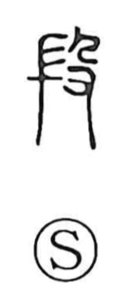

段

Uncategorized
Kun: | On: dan
step ・ section ・ grade ・ stage
Explanation
段 is a compound graph that sets the striking hand-halberd 殳—an instrument for beating—beside a left element that originally depicted a lump of unrefined metal. In early forms it evoked the act of pounding and working raw metal, so the character first meant the forging process and stands as the original graph behind 鍛 (tan, to forge). As the left element’s depiction evolved to suggest layered strata, the meaning broadened to things formed in tiers or divided into layers—hence the sense of a step, section, or grade.